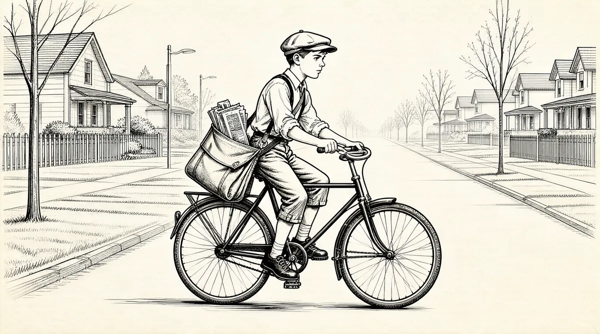

第8章 1 000招

沃伦·巴菲特首次挣得的几美分来自销售口香糖。从6岁第一次卖口香糖的那刻开始，他就表现出对顾客毫不让步的态度，这大大反映了他后期的风格。
我有一个小小的绿色盘子，里面被分成了5个部分。我很肯定是我的伊迪丝姨妈给了我这个东西。这个东西能分装5个牌子的口香糖，黄箭、荷兰薄荷、绿箭等等。我从我的祖父那里买上几包，然后逐门逐户地向邻居推销这些东西。我过去经常在晚上做这件事。1
我记得有一位名叫弗吉尼娅·麦考布里的女士说：“我要买1片黄箭。”我说：“我们不拆着卖。”我的意思是我有自己的原则。直至今日，我依然记得麦考布里夫人说她想要1片。不行，只能一包5片一起卖。5片5美分，而她想在我这里花1美分。
做成一笔买卖是很诱人的事，但是还不足以诱惑沃伦改变心意。如果他卖1片给麦考布里夫人，那他就得把剩下的4片卖给其他人，1片口香糖不值得这么做或冒这个险。每卖一整包，他能赚2美分。他可以用手拿着这些钱，沉甸甸的，实实在在的。它们就是滚动的资金雪球的最初几片雪花。
沃伦愿意拆开可口可乐的红色包装箱，在夏天的晚上挨家挨户地叫卖。他跟家人度假时也一直卖，向那些在奥科博吉湖岸边晒日光浴的人兜售。汽水比口香糖赚钱多了：每6瓶汽水，他能挣5美分。沃伦把挣来的硬币自豪地塞进挂在腰带上的一个棒球场形状的镀镍零钱罐。当沃伦一家家售卖《星期六晚邮报》和《自由》杂志的时候，他也带着这个东西。
零钱罐让他觉得自己很职业，它代表着买卖过程中沃伦最喜欢的一个环节：收藏。虽然他主要收藏瓶盖、硬币和邮票，但他也收藏现金。他把硬币放在家中的一个抽屉里，有一次里面增加了20美元——父亲在他6岁时给他的钱——所有这些都被记录在一个小小的栗色银行存折上，这是他的第一个银行账户。
到沃伦快10岁的时候，他和斯图·埃里克森开始在爱姆伍德公园的高尔夫球场卖二手高尔夫球——直到警察接到举报把他们赶出球场。不过，当警察把这事儿告诉沃伦父母的时候，他们对此并不担心。他们认为自己的儿子只是有点儿野心勃勃。据他的姐妹说，作为巴菲特家的唯一男丁，早熟的沃伦带有某种“光环”，能够躲避掉很多讨厌的惩罚。2
10岁的时候，沃伦找到一份在奥马哈大学橄榄球比赛期间售卖花生和爆米花的工作。他穿行于看台，高声叫卖：“花生——爆米花，5美分——5美分——5美分，买点儿花生、爆米花吧！”当时正在进行1940年总统大选，沃伦收集了很多不同的温德尔·威尔基和查尔斯·麦克纳里的胸章，他把这些东西别在短袖上，他最喜欢的一句话是：“华盛顿不会，克利夫兰不可能，罗斯福不应该。”这影射的是富兰克林·罗斯福触犯众怒的第三次竞选决定——至少对巴菲特家的人来说是这样。虽然美国宪法当时对任期没有限制，但美国人民抗拒“帝国总统”思想，至今依然如此。3霍华德认为富兰克林·罗斯福是一个通过哗众取宠而获取民意的暴君。富兰克林·罗斯福再连任4年的想法几乎让他作呕。
虽然霍华德发现就自己的偏好来说，温德尔·威尔基太过自由化，不过他仍然期盼有人把罗斯福给“干掉”。追随父亲政见的沃伦喜欢在体育馆炫耀自己的威尔基和麦克纳里胸章。之后，他的经理把他叫到办公室，告诉他：“把胸章摘下来，否则，你会激怒罗斯福的支持者。”
沃伦把胸章收回围兜里，里面的1角和5分硬币卡在了胸章的后面。当他在比赛之后向经理汇报工作的时候，经理让他把袋里的东西都拿出来，胸章以及其他所有东西。之后，经理把这些东西一股脑儿地从柜台上拿走，全部没收。
这是我经商的第一课。我难过极了。
当罗斯福前所未有地第三次连任之后，巴菲特家更难过了。
虽然政治是霍华德的主要兴趣，赚钱次之，但对他的儿子来说，这两个兴趣的地位却是相反的。沃伦一有机会就去父亲的办公室转悠——办公室位于古老、宏伟的奥马哈国民银行大厦——读《巴伦周刊》上的《交易者》专栏文章，看父亲书架上的书。他经常待在哈里斯·厄汉公司的客户房间。这家地区性股票经纪公司所在楼层比霍华德的办公室低了两层。在这家公司，沃伦发现能够在“黑板上写东西”——在大萧条时期某个清闲的周六早晨，在黑板上写上股票价格——令他痴迷不已。市场在周末仍然会交易两个小时。客户房间里围成半圈的椅子上坐满了人，心情压抑的人们无事可做，无精打采地看着电子显示器上爬动的数字。4有的时候，有人会跳起来，从这部许久不动的纸带打点器里面撕扯出一些纸带。沃伦和叔公弗兰克·巴菲特以及舅公约翰·巴伯一起来这里。弗兰克不喜欢与人往来，在追求亨丽埃塔（已过世很久）时，输给了欧内斯特，为此伤透了心。5这两位长辈一直以来都只习惯于思考市场的单向趋势。
弗兰克叔公认为市场完全处于熊市，而约翰舅公则持彻头彻尾的牛市观点。他们争着吸引我的注意，想要证明自己是正确的。他们不喜欢对方，因此，彼此之间从不交谈。不过，我坐在他们中间，他们会和我交谈。我的弗兰克叔公认为世界上的一切都将崩溃。
每当有人走到椅子后面的柜台那里，说“23美元买进100股美国钢铁”，弗兰克叔公总会用低沉的声音说：“美国钢铁？它会跌到一文不值。”对经纪业务来说，这可不是一件好事。经纪公司不会把他赶出去，但是他们讨厌他待在这个地方，这个办公室可不喜欢卖空者。
夹在两位长辈中间的沃伦盯着那些模糊不清的数字。他看不清楚电子显示器上的报价，家里人因此发现他成了近视眼，并给他配了眼镜。沃伦注意到，数字似乎会根据自己的某种规律变化。虽然他的叔公和舅公都很热衷于把他拉到他们极端的立场，但沃伦注意到他们的看法和显示器上出现的数字没有任何联系。他决定找出其中的规律，但并不知道该怎么做。
弗兰克叔公和约翰舅公会争着带我去吃午饭，因为这意味着在某种程度上打败了另一个家伙。我和弗兰克叔公一起去古老的帕克斯顿酒店。在那里，我们可以花25美分买到当天的新鲜食物。
沃伦喜欢和大人待在一起，喜欢被他的长辈们争来争去。实际上，他喜欢被任何人这样争抢。他渴望吸引家里亲戚和父母朋友的注意力，尤其是他父亲的关注。
霍华德在每个孩子10岁的时候都会带他们去东海岸旅行一次，这是孩子们一生中的重大事件。沃伦很明白自己想要什么。
我告诉父亲，我想做三件事。我想去看看斯科特邮票和钱币公司，我想去看看莱昂纳尔火车模型公司，我想去看看纽约股票交易所。斯科特邮票和钱币公司在第47街；去莱昂纳尔公司要走到第27街附近；去纽约股票交易所，就一路走到市中心。
1940年，华尔街开始从崩溃中复苏，但气氛仍然很压抑。华尔街的人就像一群艰难求生的“雇佣兵”，在大部分同行倒下后，继续战斗。他们谋生的方式似乎名声不那么好，因为人们脑子里对1929年崩溃的记忆依然鲜活。虽然他们并不会四处吹嘘，但其中有些人实际上非常优秀。霍华德·巴菲特把儿子带到曼哈顿下城，拜访了规模最大的经纪公司之一的负责人。小沃伦得以一窥这座碉堡的镀金大门里面的情形。
那次，我见到了西德尼·温伯格，华尔街最有声望的人。我父亲以前从未见过温伯格，他只是在奥马哈开着一家小小的经纪行。不过，温伯格让我们进去了，或许是因为跟着一个小孩子，我们大概交谈了半个小时。
在1929年的市场崩溃中，高盛将投资者误导入一场臭名昭著的“庞氏骗局”，名声扫地。作为高盛的高级合伙人，西德尼·温伯格用了10年时间艰难地恢复公司的声誉。6沃伦对这些事一点儿也不知道，他更不知道西德尼·温伯格是一个移民的后代，一开始是在高盛当小杂役，倒痰盂、清扫合伙人丝绸帽子上的灰尘。7不过，沃伦一进入西德尼·温伯格的胡桃木墙板办公室——办公室墙上挂着亚伯拉罕·林肯写的信件、文件原件，还有林肯的画像——他就确信无疑，自己正面对着一位大人物。在拜访的最后，西德尼·温伯格做了一件事，给沃伦留下了终生难以磨灭的印象。
我走出去的时候，他拥抱了我，说：“你最喜欢哪只股票，沃伦？”
到第二天，他也许会完全不记得这件事，但是，我会一辈子都记得。
巴菲特一直都记得，温伯格，这位华尔街的大人物，如此关注他，似乎很在意他的想法。8
离开高盛之后，霍华德带沃伦去了百老汇大街，然后穿过一片巨大的科林斯式的柱子，进入纽约股票交易所。在这个财富的殿堂，人们穿着颜色鲜艳的马甲，在钢铸的交易台周围大声叫喊着，潦草地写着。工作人员疾步前后奔走，纸片碎屑扔得满地都是。不过，交易所餐厅的一幕情景激发了沃伦的想象力。
我们在交易所和一个叫安特·摩尔的荷兰人一起吃午饭，他是股票交易所的职员，长得非常英俊。午饭后，一个人拿着个盘子走了过来，盘子里放着各种不同的烟草叶。安特·摩尔选出自己喜欢的烟叶，那人给他卷了一支烟。然后我想，是的，没有什么比这更好了——定制香烟。
香烟唤起了沃伦数学头脑的想象力。他对吸烟真的是毫无兴趣。不过，作个反向的逻辑推理，沃伦明白了雇用一个人做这样一件小事所隐含的意义。如果说花钱雇用这个人是合理的行为，这势必意味着，即使全国的大多数人民依然深陷大萧条不能自拔，但这个卷烟工的老板正在大笔地赚着钱。沃伦马上就领悟到这一点。纽约股票交易所里的资金流源源不断，就好像河流、喷泉、小瀑布和洪流，所以这里的交易员能够雇用一个人就干卷烟卷这么一件事，只为满足个人喜好。
就在那天，就在他看到那个卷烟工的时候，对未来的预期图景就此植根于沃伦的脑中。
当沃伦回到奥马哈的时候，他一直保留着这个预期，而如今他已足够成熟，可以设想自己的目标，并以更加系统全面的方式去实现目标。沃伦还是享受着普通男孩的娱乐休闲，打篮球、乒乓球，收集钱币和邮票。全家陷入对小个子、亲切的外祖父约翰·斯塔尔的哀悼——享年73岁，是沃伦生命中失去的第一位亲人。尽管如此，他还是满怀激情地工作，为了前方可预期的未来。他要挣钱！
钱可以让我独立。然后，我就可以用我的一生去做我想做的事情。而我最想做的事情就是为自己工作，我不想让别人主导我。每天做自己想做的事，这对我来说非常重要。
助他一臂之力的工具很快落入他的掌中。一天，在本森图书馆，一本书在书架上向他招手，银色的封皮闪烁着光泽，如同一堆钱币，暗示着其内容的价值所在。受到书名的吸引，沃伦打开这本书，立即就被迷上了。书的名字是“赚1000美元的1000招”，换句话说，能赚100万美元！
封面上有一张照片，一个小个子男人凝视着一大堆钱币。
“机会在敲门。”书的正文第一页这么写着，“在美国历史上，对一个以小额资本开始创业的人来说，时机从未像现在这样有利。”
多有想法啊!“过去，我们都听到过大量关于时机的故事……和今天等待那些有胆识、有谋略的人的机会相比，昨天的机会根本不算什么。今天创造的财富会令亿万富翁奥斯塔和洛克菲勒的财富相形见绌。”这些文字描绘出一个天堂，浮现在沃伦·巴菲特的眼前，他更快地翻动书页。
“不过，”这本书警告说，“没有行动，就不可能成功。要赚钱就要开始行动……美国有成千上万想要发大财的人都无法如愿，因为他们都在等待。”行动！这本书如此劝诫，并说明了如何展开行动。《赚1000美元的1000招》里有大量实用的商业建议和赚钱的想法，以“金钱的故事”开篇，文字通俗易懂，文风亲切朴实，就像一个人坐在门廊上和朋友谈话。书的有些想法存在局限，如山羊奶酪业和玩具医院，但是很多都很实用。抓住沃伦的一个想法是本尼威特秤。如果沃伦有一台称重器，他会一天称体重50次。他认定其他人也会付钱这么做。
称重器赚钱的道理很容易理解。我会买一台称重器，然后用利润买更多的称重器。无须太久，我会有20台称重器，每个人一天称50次。我想，钱就放在那儿呢。9钱又生钱，还有什么比这更来钱呢？
“复利”的想法深深触动了沃伦，这很关键。这本书告诉他，他可以挣1000美元。如果以1000美元起家，每年增长10%：5年内，1000美元会变成1600多美元；10年内，会变成将近2600美元；25年内，将超过10800美元。
当固定增长率逐年变大的时候，数字会发生爆炸性增长，这就是一小笔钱如何变成一大笔财富的途径。沃伦可以清晰地构想这些钱的复利未来，正如他把雪球滚过草坪而让雪球变大的道理一样。沃伦开始从不同的角度思考时间。复利把现在嫁给了未来，如果若干年后，1美元成了10美元，那在他的脑子里，这两个数字之间没有任何区别。
坐在朋友斯图·埃里克森家的门阶上，沃伦宣布自己在35岁的时候将会是一名百万富翁。10一个孩子在大萧条的1941年说出这种话，真是大胆放肆，而且听上去近乎是在犯傻。不过他的计算——还有那本书——表明这件事是有可能的。沃伦有25年的时间，他想要更多的钱。而且，他相信自己能够做到。他一开始挣到的钱越多，资金复利增长的时间越长，他实现目标的可能性就越大。
一年之后，他创造出实现梦想的关键因素。让家里人感到好玩和吃惊的是，到1942年的春天，沃伦已经有120美元了。
姐姐多丽丝被招募为合伙人，沃伦为自己和多丽丝买了城市服务公司的3股优先股，一共花了114.75美元。11
我买的时候并不了解那只股票。
沃伦只知道那是父亲霍华德最喜欢的一只股票，很多年来他都在向客户推荐。12
那年6月，市场走势低迷，一路下行。城市服务公司的优先股股价从38.25美元跳水到27美元。沃伦说，在上学的路上，多丽丝每天都“提醒”他，他的股票正在下跌。沃伦觉得责任压力大得可怕。因此，当股票最后回升的时候，他以40美元卖出，为他和多丽丝赚了5美元。“那个时候，我才了解到，沃伦知道自己在做什么。”多丽丝回忆说。不过，城市服务公司的股价很快就高涨到202美元。沃伦学到了三个教训，并把这段时期作为他一生中最重要的时期之一。第一个教训是，不要过分关注股票的买入成本。第二个教训是不要不动脑筋地急于抓住蝇头小利。如果他能更耐心一点儿，他就能赚到492美元，他对此一直念念不忘。从他6岁开始，他干了5年活儿才积下120美元买了这只股票。沃伦意识到，以那会儿从出售高尔夫二手球、在棒球场贩卖爆米花和花生中赚到的钱为基准来计算，要把“丢失”的利润赚回来，那得用好多年。他将永远、永远、永远地记住这个错误。
还有第三个教训，是关于投资他人资金的。如果他出现投资失误，那可能会有人因他而烦恼和不安。因此，他不想对其他任何人的资金负责，除非他非常确信自己会成功。
[1]本尼威特，pennyweight，英美金衡单位。——译者注